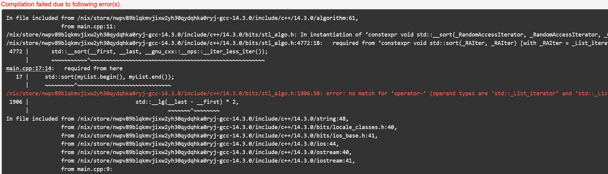
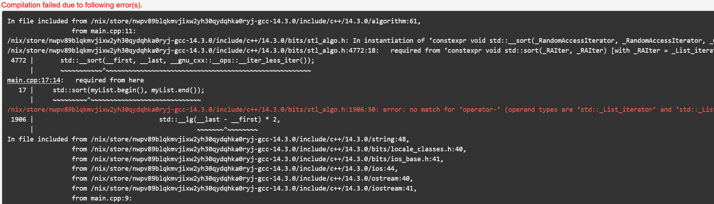

Le problème : Avant C++20
Supposons que l'on souhaite trier des élements dans un conteneur
std::list<int> myList = {3, 1, 2};
std::sort(myList.begin(), myList.end());
std::sort(myList.begin(), myList.end());
Et vous obtenez ça :

